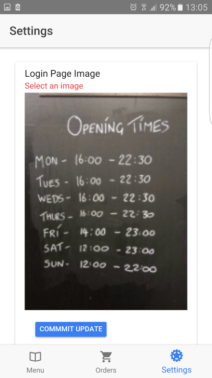
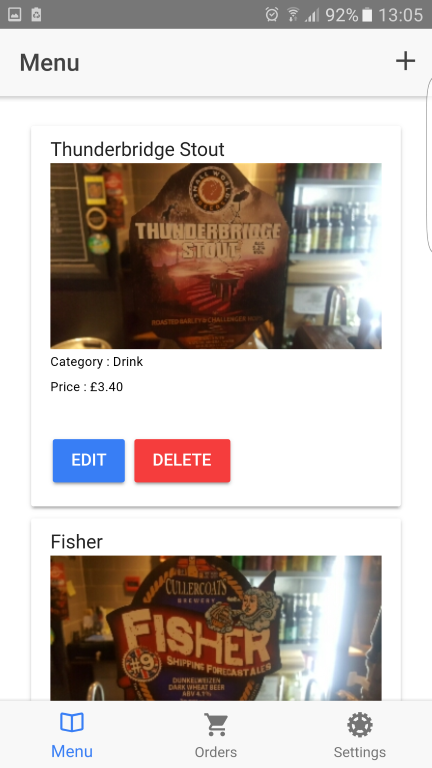

Step 3: Test Run and Data
In this step, we’re going to test our applications are working and add some data before deployment. For this step, you’ll need your mobile device, and to download the Ionic View app to your device.
Next, we’ll need to open the Node.js command prompt
that was installed with Ionic. Once you’ve located this, you’ll need to
do the following.
Firstly, type the command (without the dollar sign) replacing the
YOUR FRONTEND FILEPATH HERE with the location where you’ve stored the customer application folder.
You can do this by opening it in a file explorer, then copying and pasting the location path.
-
$cd YOUR FRONTEND FILE PATH HERE
Then, type the following command and when prompted, enter your Ionic account details. Once that’s completed, a testing version of your customer application, using the sample data provided in the sampledata JSON will be available for you to download.
-
$cd ionic upload
Then we'll repeat this process for our business application too. Once these are working, you can go ahead and supply your own menu and design features through the business application.
When you set up your design, Navigate to your business application’s Settings tab.
From there, you can select the image that forms the background of your login and signup screens,
the image that’ll be displayed as your logo across the app, and a pair of panels for the account settings and navigation bar.

Finally, to set up your menu,
add your items using the form accessed in the top-right corner.
You should then delete the samples so they aren’t showing up on the menu for your users.
You can also edit the existing items with the Edit option.
